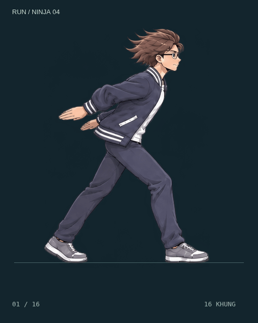
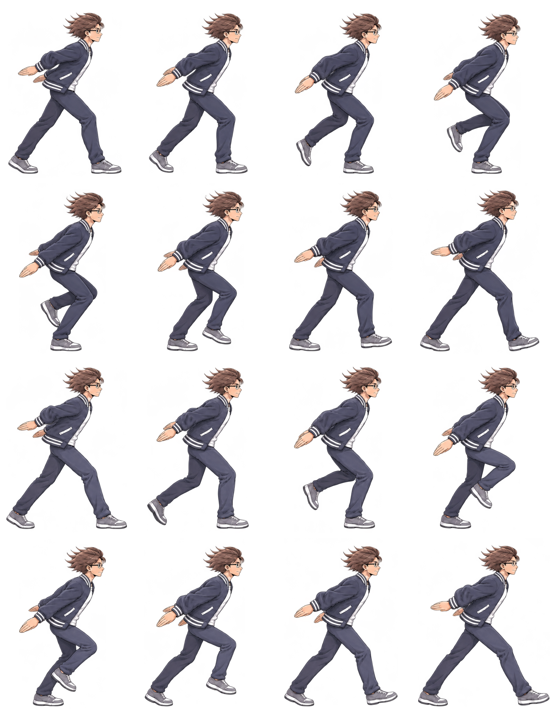

DỊ MÔN / NINJA RUN TRIAL 04
Chạy ninja — nhịp vai, khuỷu và cổ tay.
16 khung, hai bước chân. Vai, khuỷu và cổ tay đổi hướng nối tiếp nhau; đầu giữ ổn định hơn. Chọn tốc độ chậm để xem nhịp tay, tóc và gấu áo.



Đối chiếu GIF bản 03

Spritesheet 4 × 4
